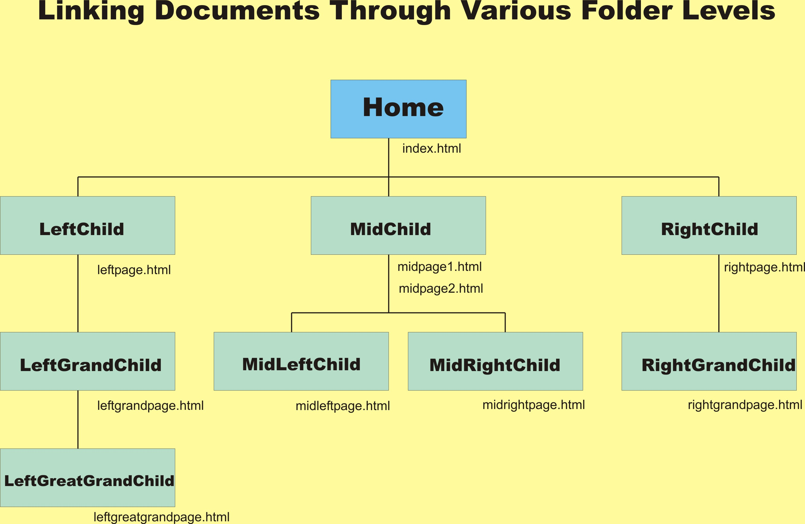

Due date and time: September 25, 2017, 1:00 pm
If you are late (for any reason), send me an MIO (message on Omnivox) after you submit your assignment; otherwise, I might not check again your folder on drive T:. Of course, being late leads to 20% penalty, unless you have a valid justification. Being late more than one week means too late:-(
Topics: Web Site Design, relative URLs
Exercise 1. | Exercise 2. | Exercise 3. | Exercise 4.
In this assignment you start to create your very own web site.
The purpose of this assignment is for you to start the design process, organize all the web pages you have created so far into a fully linked web site, and prepare the ground for the web pages you will create in your later assignments.
Spend enough time thinking about the design. Make diagrams on paper first, and decide where to put the navigational links. Ensure the portability of your site by using relative URLs.
Remember again to place your email link at the bottom of your homepage.
Put the emphasis on good design, (rather than on the quantity of pages in the site), so that navigation through your site is intuitive, i.e. easy, logical and pleasant.
Exercise 1.
To get used to the conventions used by web page hosting services, create
a "public" folder that will be copied later (with its content, of course) in the folder that is labeled with your name. Call this "public" folder pub. In it, create a home page (index file), similar to the index file created in Assignment 1. Call it index.html. This home page will be the root of your hierarchical tree. From now on I will refer to it as the "Starting Page". Identify yourself in your Starting Page. In the beginning its only links should be to your assignment home page (also see below). Later on you will add more links.
|
Sidebar
|
Everything you have created so far in your a1 folder (your Assignment 1) should now be contained inside the "pub" folder. "pub" is your "official website", permanently under construction, open to inspection by myself.
Pretend that "pub" exists on a server out there on the Internet, i.e. permanently in public view.
Next, create an "assignments" folder, and place it inside "pub". In it, have another index file. Organize this index file so that it contains further links to each of your assignments.
Your assignment-index page should be simple, with a heading explaining the purpose of the page, and some colour.
Avoid harsh colours. Make sure there is enough contrast between background and foreground colours. Avoid white text on a black background, it is hard on the eyes. Choose the same look & feel for the assignment pages, and the same background colour for pages at the same level of hierarchy.
For each assignment, place all its related files in its folder, as you have done so far (or should have), i.e. the Assignment 1 - index page belongs in the "a1" folder, Assignment 2 - index in "a2", etc. Create three more sub-folders of the "assignments" folder and name them "a3" through "a5". In each of these, place a "dummy" index.html page, with a short message explaining that it is a place holder for the corresponding future assignment page.
In particular, Assignment 2 will contain links to Exercise 3 and Exercise 4 (and of course a link back to the Assignments-home page).
For navigational links, design them (on paper first) so that finding information and navigating your site is easy. Do not place unnecessary links from each page to every other. Choose the placement and direction of the links carefully. For example, in your Assignment-home page, have a link near its top that links to your current assignment page, and in your assignment page, have a link that points back up to this home page. In other words the "assignments" page will have links to each of your assignments, present and future, and vice versa: each assignment that is referenced from the "assignments" page must have a link back to it.
Exercise 2.
In a second step, create a 'hobbies' folder, and include it in your web site structure as a folder distinct from the assignments-folder (but contained inside "pub", of course, at the same level with Assignments). For the time being, keep it very simple. Choose two different hobbies, and create for each one a folder with a corresponding web page inside. Of course, remember the navigational part, i.e. you should always be able to return through a link to the previous level of your folder tree.
For example, one of these could be cooking (if true), or theater, music, history, geography, etc. It is your choice.
You are free to include absolute URL-s to external sites, but always explain what you are linking to. Do NOT reproduce actual remote site contents, unless it is a very short paragraph, and then be sure to assign credit properly.
Apply the same principles of good design discussed earlier. You will be augmenting the hobbies regularly with time. So start with a simple content for the time being. Two-three paragraphs should be okay for now. Remember, it is the good design of your website that we want to work on, more than the actual content. However, avoid trivial solutions...
Tip for page layout: if a page exceeds one screenful, consider using local links named anchors to help the reader. Consult your class notes and the source code of this very page (the one you are now reading) to recall how it's done.
Refer to the diagram showed here, in icon form.
Your job: follow the example shown here and write out all possible links -- back and forth -- between the documents in the middle branch of the hierarchy tree and those in the leftmost branch. (Green boxes only).
You are required to submit an HTML document for this part. The easy way to create this webpage is to use the tag <pre> <⁄pre>; just follow the layout shown in the example. (The output should be aligned in columns.)
Present the hierarchical diagram of your web site, and all its links on a page. You can use a word processing or a presentation program (ex: Word, PowerPoint). Have little rectangles for each folder, with their web page files. Start with the "pub" folder (root of tree); than, put your home page underneath and all the other folders. Put the pages that are on the same hierarchical level on your site, on the same tree level, as shown in the example above.
The purpose is to show your web site structure all at once. This is in fact the work you should have done on paper, from the beginning of this assignment. Put it in a file called web-site-tree.jpg (the extension is generated by the application that creates the image -- see details explained in class). Put all your files created for exercises 3 and 4 in folder "a2" (lower case a). You should have already this folder in your web site structure.
I need this in order to keep track of your work.
The best solution would be to create a snapshot of your web site tree, save it as an image and display this image on a web page. See detailed steps here.
Each page created in exercise 3 and 4 must have a link back to the index of a2.
Inspired from prof. G. Fleischer's original
Last update: September 19, 2017